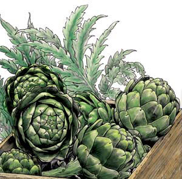
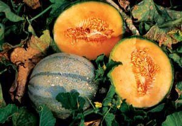

Gardener’S Almanac
Plant Now for an Extra-sweet Fall Harvest
Edited by Carol Mack
August/September 2006
Maritime Canada and New England
These are the days of fresh salsa. By September we will be dropping buckets of excess tomatoes on neighbors’ porches in the dead of night. Watch the garlic - when the bottom leaf or two die back, it’s time to harvest. A celebration of aioli (garlic sauce) and fresh vegetables is in order.
Get beds ready for fall spinach and greens, and plant these in early August. In the orchard, mow grass close to the ground and weed around trunks. Check for borers, web worms and other pests, and clean up early fruit drops to interrupt insect life cycles.
As currants, raspberries, blackberries and blueberries ripen, it’s time for jam making. If you are pressed for time, freeze berries in bulk for processing later. Watch for borer larvae in berry canes, indicated by a wilting tip above a double ring on the stem. Cut the cane below the ring line and burn. Regular monitoring can greatly reduce populations of this pest.
-Roberta Bailey, FEDCO Seeds, Waterville, Maine
Mid-Atlantic
Try drying some of those luscious tomatoes this year - a handful can make a quick sauce taste like it has simmered all day. Keep berry patches weeded and watered, add compost and top off the mulch. Attention now will ensure a good fruit harvest next year. Thin strawberries and use the excess plants to start a new bed. Finish transplanting broccoli and cabbage, and till between the rows; then sow red clover seed. Remember to water the sweet potatoes as vines begin to spread. For great fall and winter salads, plant lettuce every five days. In September, switch to hardy varieties such as ‘Winter Density.'
When nighttime temperature is less than 68 degrees, it’s an indication that conditions are right for seeding fall spinach. Improve germination by pre-sprouting spinach seeds - place them in moist paper towels for several days in the fridge. Harvest squash, eat melons, toss salads and revel in the bounty of our second spring.
-Ira Wallace, Southern Exposure Seed Exchange, Mineral, Va.
Southern Interior
Start cole crops such as cabbage, broccoli, cauliflower, Brussels sprouts and collards inside now to transplant when the weather cools in September or October. Keep pulling those weeds before they have a chance to go to seed. You will have fewer weeds next year if you keep them from going to seed now. When the weather starts to cool in September, it is time to plant kale, kohlrabi, beets, mustard, turnips, lettuce, spinach and other greens.
Test the pH of your soil and apply lime if needed. Improve soil fertility by planting cover crops such as rye grass in areas that will not be used to grow crops during the fall. Clean up dead plants and compost them so that insects don’t have a place to overwinter.
-Becky Wilder, Seeds for the South, Graniteville, S.C.
Gulf Coast
It’s common knowledge that fall gardens in the South are a cinch. Getting started is the challenge. You have to tackle the weeds, and then enrich the soil with organic matter. Finally, you have to plant during some of the worst heat of the summer. If the weeds get out of hand, simply build a raised bed: Fire up the line trimmer or mower and cut everything as close to the ground as possible. Follow with a layer of damp newspapers topped with garden soil mix, mushroom compost or whatever is available at the local garden center. Most cool season crops won’t be planted until October, but bush beans and ‘Sugar Snap’ peas can go in now. They will survive the extreme heat to produce later. Place floating fabric row covers over the beds to reduce heat and wind damage, then find some shade and a cool drink.
-William D. Adams, Burton, Texas
Central/Midwest
Be sure to keep picking if you want your plants to keep producing until fall. Try new recipes for variety, offer vegetables to your friends or send some to your local food bank. If you are especially pleased with the quality, show off your produce in a fall fair or garden club show. Fairs and exhibitions are a part of our rural roots that now educate a more urban public. Your veggies could help parents teach their children about gardening and encourage them to try it themselves.
Keep up with weeding. Since the hottest part of summer is past, now is the time to add perennials and shrubs to borders, and seed bare spots in your lawn before fall. Cool weather vegetables such as lettuce, spinach, various greens, herbs and peas also can be seeded for fall use.
-Connie Dam-Byl, William Dam Seeds Ltd., Dundas, Ontario
North Central and Rockies
August is a great time to do the past-present-future survey of your garden. Look back at the plans you had for your garden this summer and assess what worked and what didn’t. The present need in your garden is to protect soil from the hot summer sun by placing grass clippings, leaves and even newspaper between the plants.
For the future, start enough greens in cold frames to get you through the winter. These cold-tolerant greens - such as collards, kale, mustard, Asian greens and arugula - need to be planted while the days are still long. As days get shorter, they will stop growing but stay fresh and ready to harvest. You need to plant them now so they grow enough to make a difference in your winter diet. You can find instructions in Eliot Coleman’s Four-Season Harvest or Leandre and Gretchen Poissons’Solar Gardening.
-Bill McDorman, Seeds Trust, High Altitude Gardens, Hailey, Idaho
Pacific Northwest
Try to finish most of your fall planting by mid-August - just use any vacant spaces and pop in a few plants or seeds. Possibilities include kale, broccoli, turnips, pak choi and radishes, along with mustard and spinach.
Slowly but surely, rains will return to the Northwest, setting up conditions for fall plant diseases. Powdery mildew shows up as white splotches on squash leaves. Choose resistant varieties such as ‘Romulus PM’ zucchini, or spray with neem oil when the disease is first noticed. Late blight can kill a healthy tomato plant in a matter of days. Prevent it by creating a “roof” above your tomatoes with clear plastic to keep leaves dry, or plant late-blight-resistant varieties such as ‘Legend.’
Raising pumpkins with your kids? Help them scratch their names on grapefruit-sized ones in early August, and watch those signatures grow!
-Rose Marie Nichols McGee, Nichols Garden Nursery, Albany, Ore., and Josh Kirschenbaum, Territorial Seed Company, Cottage Grove, Ore.
Southwest
Make regular dates with your garden in the early evening to admire the fruits of your labor, cool drink in hand. But don’t muse for too long before you switch gears to fall gardening - this is your window to ensure a winter bounty.
In early August, start broccoli and cabbage inside for transplanting later. Outside, sow beets, carrots and radishes in anticipation of a colorful November root feast. It is also time to seed cool-season annual herbs such as cilantro, dill, fennel, calendula and borage. These herbs will flourish as temperatures begin to mellow.
In low-desert climates, short-day onion varieties planted now will overwinter and produce an early spring crop. Use transplants or sets (bulbs less than 1 inch in diameter). ‘Valencia’ is a sweet Spanish variety adapted to both short day and long day regimes, and performs well in the wide range of Southwestern gardening zones.
-Emily Gatch, Seeds of Change, San Juan Pueblo, N.M.
|
 JUDITH ANN GRIFFITH/SEED SAVERS EXCHANGE Beloved by the French, Charentais melons, such as this ‘Alienor’ variety, offer some of the richest flavors in the cantaloupe world. |
 DAVID CAVAGNARO This kohlrabi seedling’s roots are kept cool by a thick layer of mulch. |
 BARBARA PLEASANT |